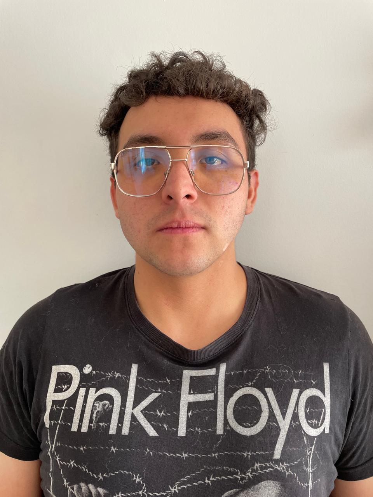

Gabriel Esteban Vásconez Barahona
Datos de Contacto

Dirección: De las Almendras y Av. Manuel Córdova Galarza. Quito, Ecuador
Email: gevasconezb@gmail.com
Celular: 096-402-3909
Fecha de nacimiento: 19 de noviembre de 2003
Cédula: 175211414-8
Objetivo Profesional
Contribuir activamente en una organización que valore el compromiso, el pensamiento analítico y la vocación
por
el aprendizaje continuo,
aplicando mis habilidades en ingeniería de software y formación académica para alcanzar objetivos colectivos
y
consolidar mi desarrollo profesional.
Habilidades
- Liderazgo y trabajo colaborativo
- Comunicación clara y trato cordial
- Responsabilidad, resiliencia y proactividad
- Pensamiento lógico, análisis crítico y toma de decisiones
Conocimientos Técnicos
- Lenguajes de programación: C, C++, Java, Python, JavaScript
- Desarrollo web: HTML, CSS, JavaScript (DOM), Node.js, JSP y Java Servlet API
- Manejo de Git y control de versiones con GitHub
- Herramientas de desarrollo: IntelliJ IDEA, Visual Studio Code, NetBeans
- Ingeniería de Software: metodologías ágiles (Scrum), UML, gestión de requerimientos
- Bases de datos: SQL, modelado relacional, consultas y normalización
- Sistemas operativos, compiladores y teoría de la computación
- Suite Microsoft Office: Word, Excel, PowerPoint
Experiencia
- Tutor en el Proyecto de Inclusión Digital del LUDOLAB, Escuela Politécnica Nacional
(2024 – 2025)
- Profesor particular de Cálculo y Ecuaciones Diferenciales (2023 – Presente)
- Instructor de Introducción a la Programación en los cursos vacacionales de la
Asociación de Estudiantes de Ingeniería de Sistemas (2025)
Logros Académicos y Reconocimientos
- Segundo lugar en el I Campeonato de Matemáticas Interparroquial San Antonio de Pichincha (2018)
- Reconocimiento de Excelencia Académica por Primer Lugar (2017 – 2018)
- Becario en la carrera de Artes Musicales por mérito artístico en la USFQ (2020)
Educación
- Ingeniería de Software, Escuela Politécnica Nacional (2022 – Presente)
- Bachiller en Ciencias, Unidad Educativa Alexander Von Humboldt (2018 – 2021)
- Educación Primaria, Unidad Educativa Alexander Von Humboldt (2009 – 2018)